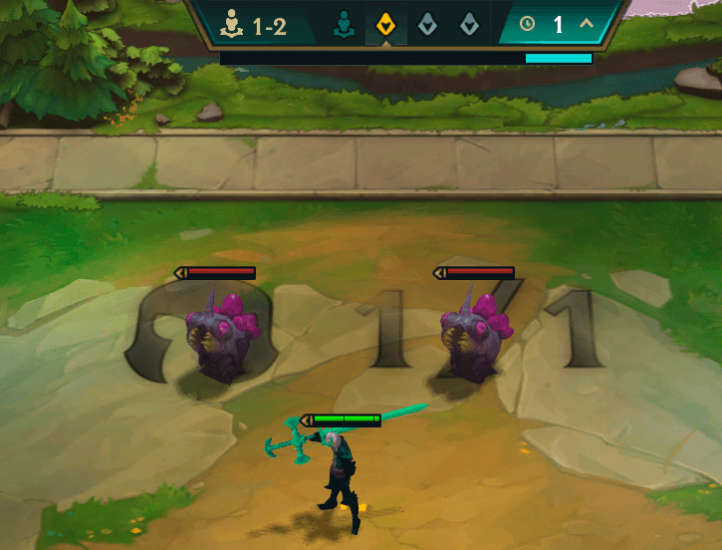
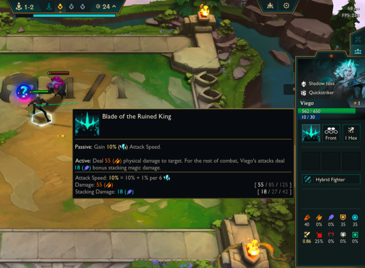
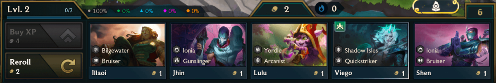
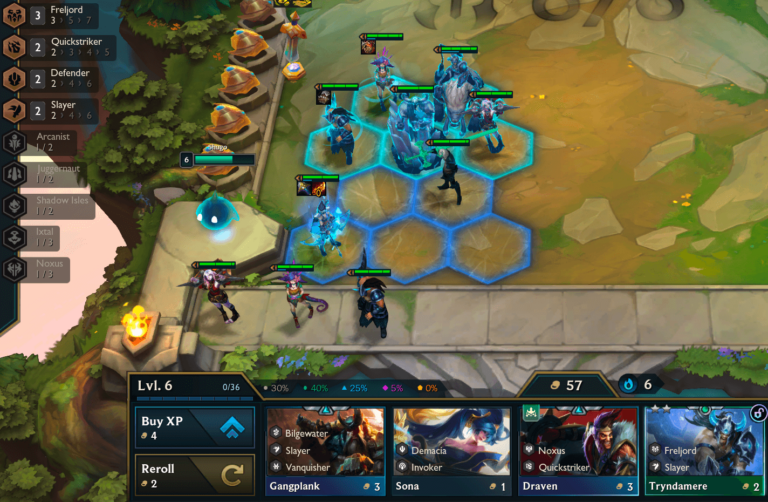
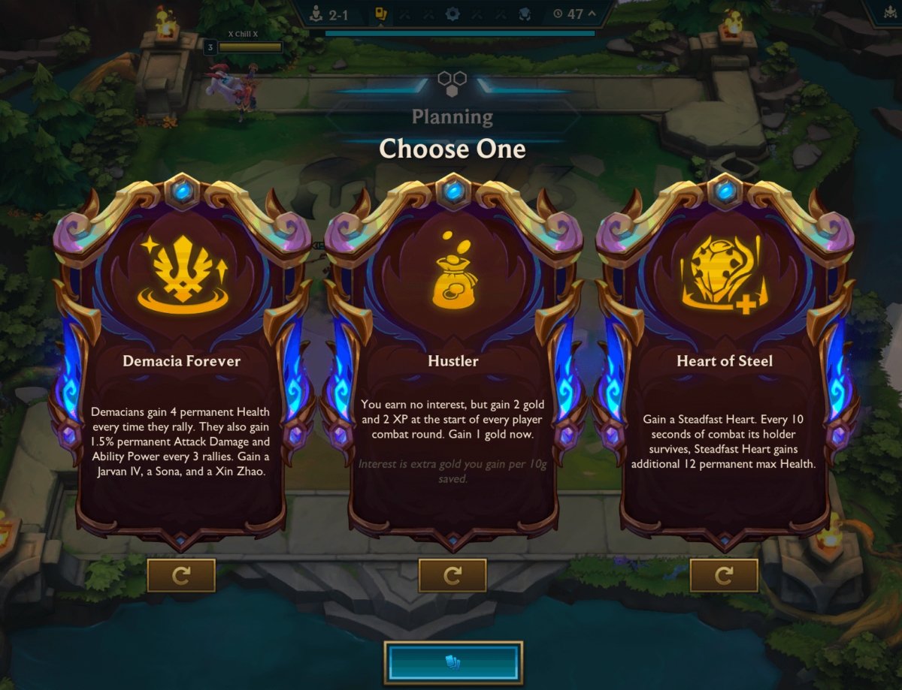
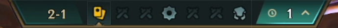
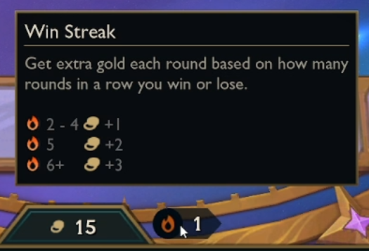
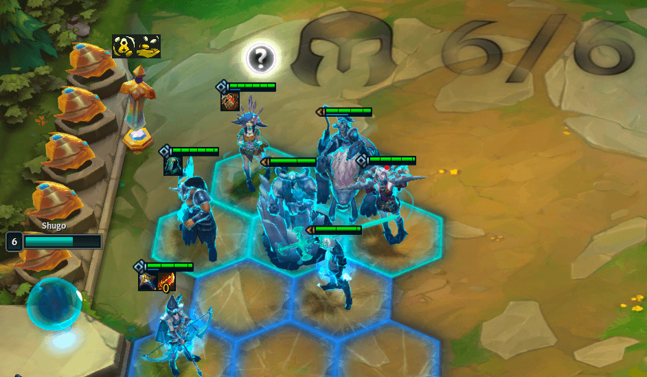

Teamfight Tactics (TFT) is an 8-player free-for-all strategy "autochess" game. Your ultimate goal is to be the last player standing. You achieve this by accumulating resources, drafting a powerful team of champions, and tactically positioning them on the board to defeat your opponents' teams.
Every match begins with a random Encounter that grants you a starting bonus, followed by receiving your first 1-cost champion. Don't worry about other players yet! The first three rounds are PvE (Player vs. Environment). You will fight weak, bot-controlled minions to gather early loot such as gold, items, or additional champions.
During combat, your units act automatically. Every time they land a basic attack or take damage, their blue mana bar fills up. Once the mana bar is completely full, the champion will cast their unique special ability, which can easily turn the tide of a battle.
After the initial rounds, the game truly opens up. You will be offered a Shop with 5 random champions. Buying units that share the same "Origin" or "Class" activates Synergies. These are powerful passive buffs that apply to your team. Building a team around specific synergies is the core to winning.
If you buy three identical 1-star copies of a champion, they will automatically combine into a much stronger 2-star unit. If you manage to collect three 2-star units, they will merge into a massive, game-winning 3-star unit with heavily boosted health and ability damage.
At three specific stages of the game (rounds 2-1, 3-2, and 4-2), you will be asked to choose an Augment. Augments are permanent game-modifiers that grant you special bonuses, such as extra gold, items, or combat enhancements for your team.
Most of the game consists of Player vs. Player (PvP) rounds where your board fights a random opponent's board. The loser takes damage to their overall health. Every 4th round of a stage features a "Carousel" round, where players are released in reverse order of their standings (lowest health picks first) to grab a free champion holding an item.
Managing your gold is vital. You receive base gold every round, but you can earn more through two methods: "streaking" (winning or losing multiple rounds in a row) and "interest". For every 10 gold you hold in your bank, you earn +1 extra gold per round (up to a maximum of +5 gold for holding 50 gold).
Placement matters! Put your tanky, high-health units in the front row to absorb damage, and keep your fragile damage-dealers safely in the back. Throughout the game, you'll collect basic item components. Giving two components to a champion merges them into a powerful completed item. Make sure to give damage items to your carries and defensive items to your frontline.
